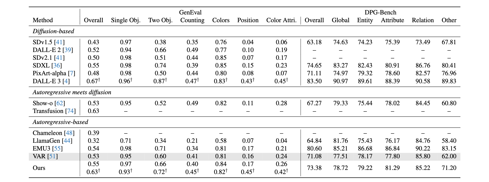

Text to Image Generation


We present TokenFlow, a novel unified image tokenizer that bridges the long-standing gap between multimodal under-standing and generation. Prior research attempt to employ a single reconstruction-targeted Vector Quantization (VQ)encoder for unifying these two tasks. We observe that understanding and generation require fundamentally different granularities of visual information. This leads to a crit-ical trade-off, particularly compromising performance in multimodal understanding tasks. TokenFlow addresses this challenge through an innovative dual-codebook architecture that decouples semantic and pixel-level feature learn-ing while maintaining their alignment via a shared map-ping mechanism. This design enables direct access to both high-level semantic representations crucial for understand-ing tasks and fine-grained visual features essential for generation through shared indices. Our extensive experiments demonstrate TokenFlow’s superiority across multiple dimensions. Leveraging TokenFlow, we demonstrate for the first time that discrete visual input can surpass LLaVA-1.5 13B in understanding performance, achieving a 7.2% average improvement. For image reconstruction, we achieve a strong FID score of 0.63 at 384×384 resolution. Moreover, TokenFlow establishes state-of-the-art performance in autoregressive image generation with a GenEval score of 0.55 at 256×256 resolution, achieving comparable results to SDXL.
Shared Mapping is the key to bridge generation and understanding ability in one tokenizer for AR model. We incorporate dual encoders and codebooks with a shared mapping, enabling the joint optimization of high-level semantics and low-level pixel details. For a given input image, distances are calculated from the pixel-level and semantic-level codebooks, respectively, with the final codebook index and features determined by minimizing the weighted sum distance. The resulting quantized features are independently decoded for both semantic alignment and image reconstruction training, and then concatenated to provide a unified representation for downstream tasks in understanding and generation.
TokenFlow can combine both semantic and low-level similarity (e.g. birds with different background can be mapped into two different index) and exhibits significantly smoother distribution compared to others.
@article{qu2024tokenflow,
title={TokenFlow: Unified Image Tokenizer for Multimodal Understanding and Generation},
author={Qu, Liao and Zhang, Huichao and Liu, Yiheng and Wang, Xu and Jiang, Yi and Gao, Yiming and Ye, Hu and Du, Daniel K and Yuan, Zehuan and Wu, Xinglong},
journal={arXiv preprint arXiv:2412.03069},
year={2024}
}